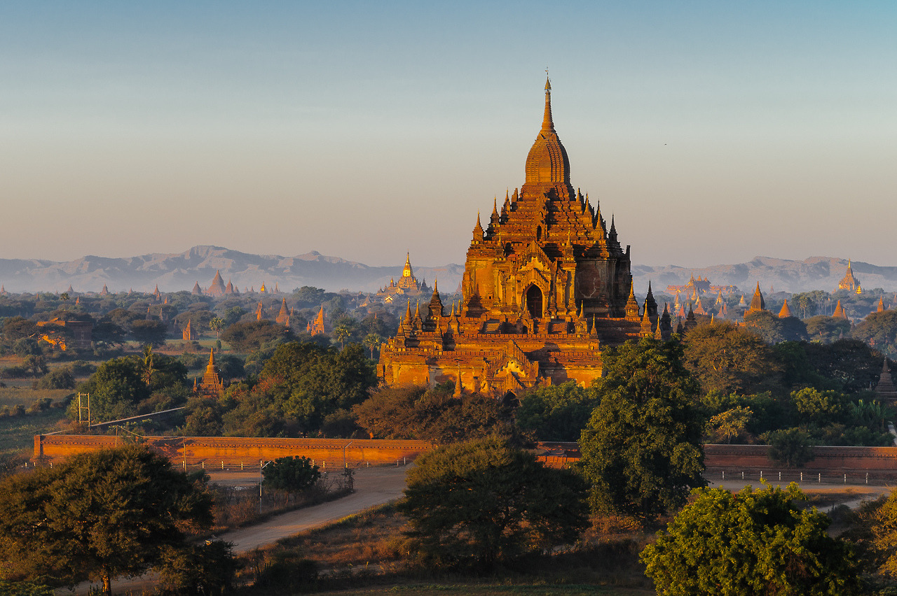

Mjanma, dawniej Birma, to państwo położone w Azji Południowo-Wschodniej nad Zatoką Bengalską i Morzem Andamańskim, wzdłuż rzeki Irawadi. Graniczy z Chinami, Tajlandią, Indiami, Laosem oraz Bangladeszem. Połowę powierzchni zajmują lasy. Dominującą grupą etniczną są Bamarowie. Największym miastem jest Rangun, drugie miejsce zajmuje Mandalaj. Gospodarka Mjanmy jest oparta na uprawie ryżu oraz przemyśle spożywczym i drzewnym.
| Waluta | Kiat |
|---|---|
| Powierzchnia | 676 578 km² |
| Język | Birmański |
| Stolica | Naypiydaw |
| Strefa czasowa | UTC +6.30 |
| Ustrój polityczny | Republika prezydencka |
Mimo bogactw naturalnych, cennych kamieni, gazów, minerałów, niesamowitego potencjału turystycznego, Birma jest obecnie jednym z najbiedniejszych państw w Azji. Jedynym krajem, który zamierzał otworzyć ambasadę w nowej stolicy Birmy, była Korea Północna. Obecnie w Naypyidaw nie mieści się żadna ambasada/konsulat innego państwa. Myanmar jest jedynym na świecie krajem, gdzie jeździ się samochodami z kierownicą po prawej stronie w ruchu prawostronnym.
Źródła:
tumblr.com/search/myanmar
wikipedia.org/wiki/Mjanma
kachnagrubachna.com/2017/06/23/ciekawostki-o-birmie